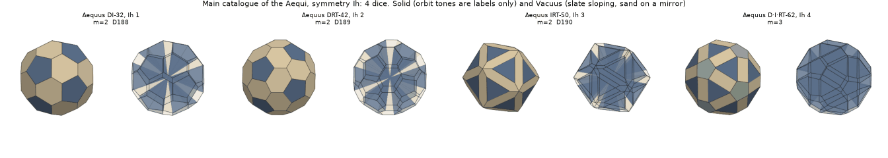
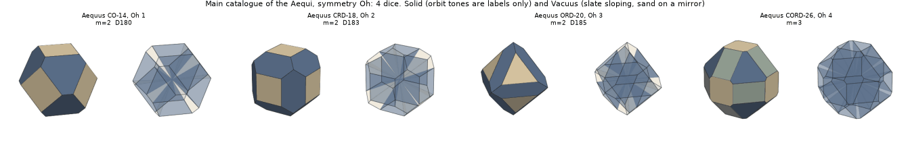
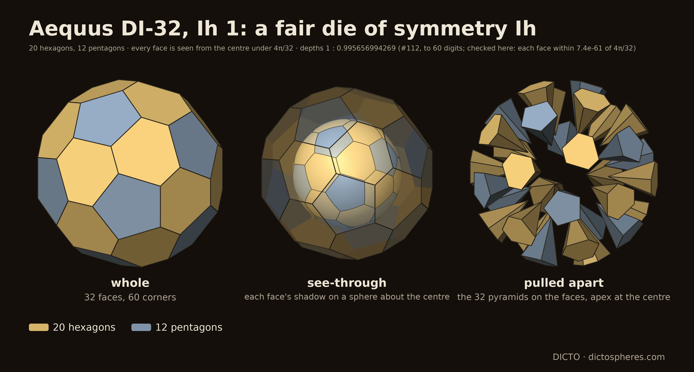
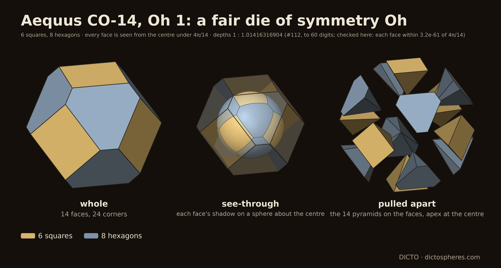
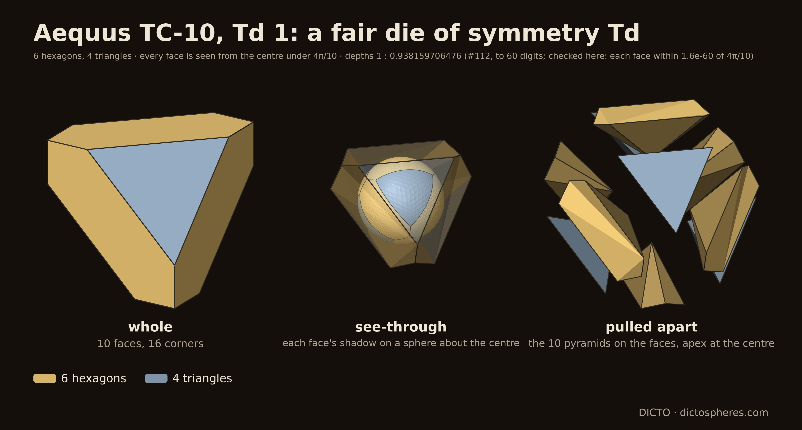
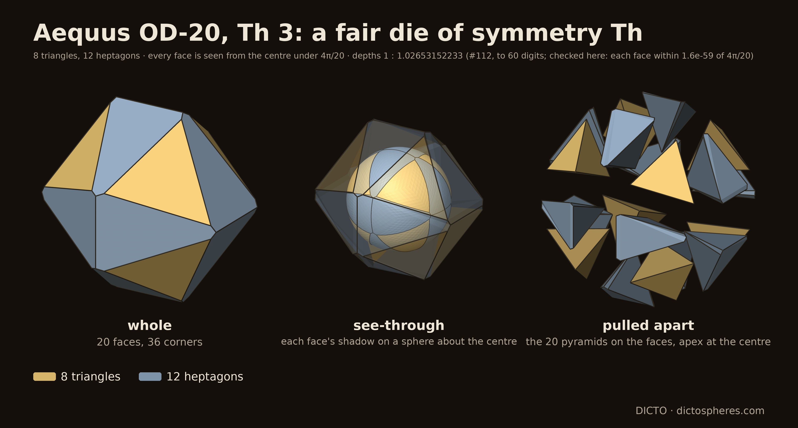
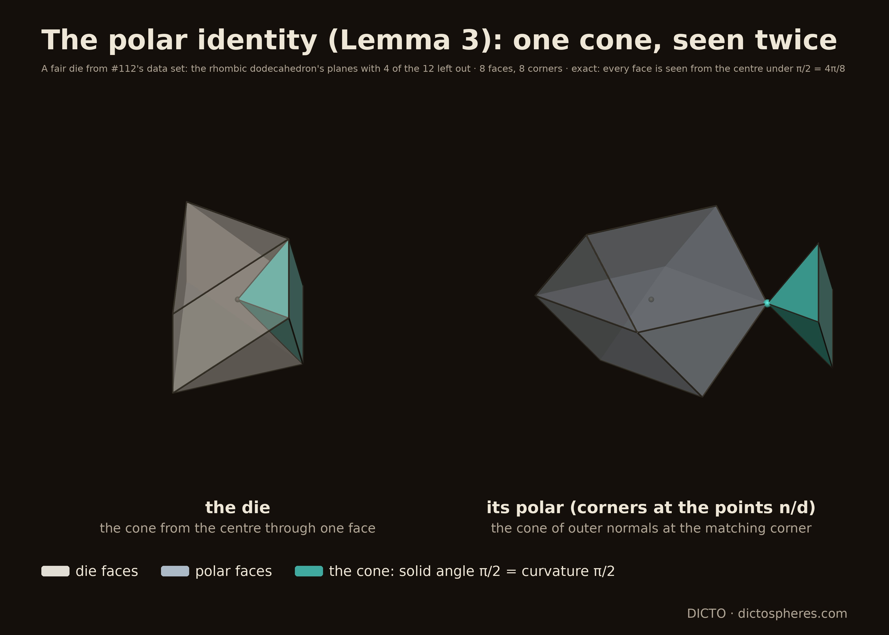
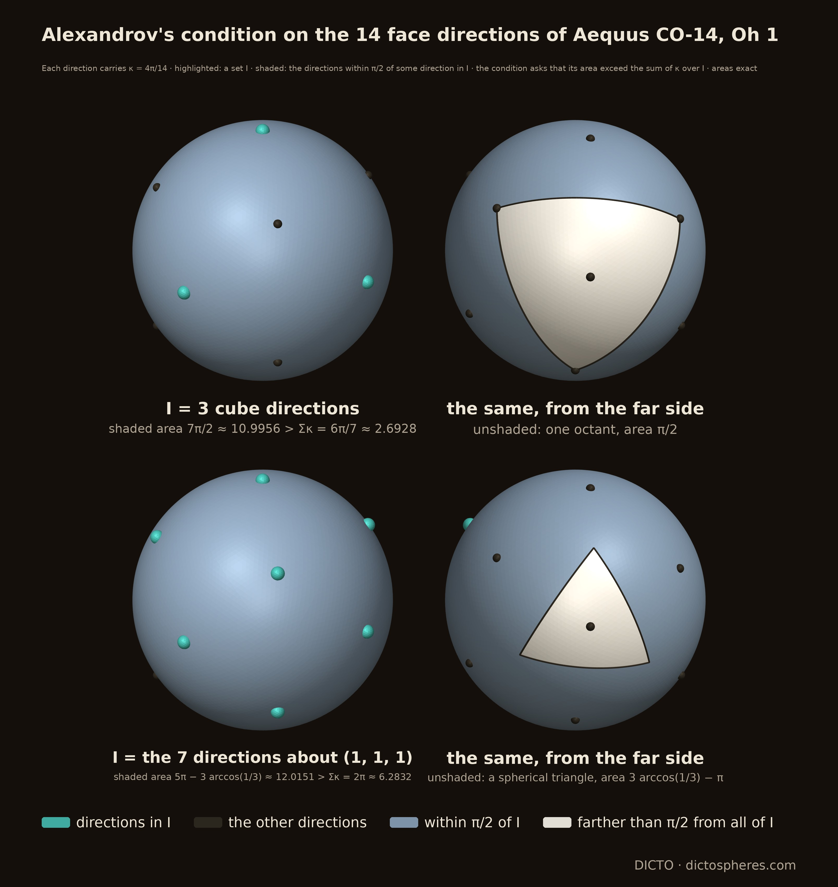

Alexandrov's theorem on polytopes with prescribed curvature, and the fair-die theorem of the Aequi paper, stated as formalised in Lean 4
sorry and only Lean's standard axioms; its five statements are registered for Palomar's comparator. The theorems are Alexandrov's, Oliker's, Bertrand's and #112's; this paper and its Lean source claim only the formalization. We found no earlier machine-checked proof of Alexandrov's theorem on prescribed curvature (§5).A die rolls fairly by symmetry when all its faces look alike. #112 asked a different question: for any chosen face directions, can the distances of the faces be set so that every face fills the same share of the view from the centre? The answer is a curvature question about the polar solid, and Alexandrov answered it in 1942. Here the whole chain is checked by machine.
Paper #112, Fair Dice — The Aequi: Enumerating the Innumerable [1], set out the fair-die problem and proved its Lemma 1 (the polar identity) and Theorem A (a) (existence and uniqueness of the fair die) by hand, taking Alexandrov's theorem from the literature. This paper is the informal account of a Lean 4 formalization of those statements and of the polytope case of Alexandrov's theorem itself. Every statement below carries its Lean name; its grey box is the Lean text.




How statements are marked. Formalised: the statement as worded is the Lean declaration named beside it, proved in the library with no sorry and only the axioms propext, Classical.choice and Quot.sound. Neither sorry nor native_decide is used.
Definition A (rays, corners and the polytope on them). Formalised (corner, rayPolytope, Basic.lean). Let n0, …, nN−1 be distinct unit vectors in ℝ³, not all in one closed hemisphere (every nonzero x has ⟨ni, x⟩ > 0 for some i). For radii ri > 0 the polytope is the convex hull of the corners ri ni.
def corner (n : Fin N → E3) (r : Fin N → ℝ) (i : Fin N) : E3 := r i • n i
Definition B (curvature at a corner). Formalised (normalCone, curvature, Basic.lean). The curvature of a convex set Q at a point p is the area of the outer unit normals of Q at p, measured as three times the volume of the cone of those normals within the unit ball.
Definition C (Alexandrov's condition). Formalised (AlexandrovCondition, Main.lean). Prescribed curvatures κi satisfy Alexandrov's condition when, for every nonempty proper set I of rays, the sum of κi over I is less than the area of the directions within π/2 of some ray in I.
def AlexandrovCondition (n : Fin N → E3) (κ : Fin N → ℝ) : Prop :=
∀ I : Finset (Fin N), I.Nonempty → I ≠ Finset.univ →
∑ i ∈ I, κ i < 3 * (volume (nbhd n 0 I ∩ ball (0 : E3) 1)).toReal
Definition D (die, solid angle, fair). Formalised (die, solidAngle, IsFair, Dice.lean). The die with face normals nj at distances dj > 0 is {x : ⟨nj, x⟩ ≤ dj for all j}. The solid angle of face k is the area of the directions whose ray from the centre leaves through that face. The die is fair when every face has solid angle 4π/N.
def IsFair (n : Fin N → E3) (d : Fin N → ℝ) : Prop := ∀ k, solidAngle n d k = ENNReal.ofReal (4 * Real.pi / N)
Given where the corners point and how sharp each corner must be, there is a solid exactly when the sharpness adds up to a full sphere and no group of corners asks for more than its share of the sky.
Theorem 1 (existence, with necessity; Alexandrov [2], polytope case Oliker [3], Theorems 4 and 6, and Bertrand [4], Theorem 1.2). Formalised (alexandrov_iff, Main.lean). For positive κj, radii ri > 0 with curvature κj at every corner exist if and only if the κj add up to 4π and satisfy Alexandrov's condition.
theorem alexandrov_iff [NeZero N] {n : Fin N → E3} (hn : ∀ i, ‖n i‖ = 1)
(hinj : Function.Injective n) (hspan : ∀ x : E3, x ≠ 0 → ∃ i, 0 < ⟪n i, x⟫)
{κ : Fin N → ℝ} (hκ : ∀ j, 0 < κ j) :
(∃ r : Fin N → ℝ, (∀ i, 0 < r i) ∧
∀ j, curvature (rayPolytope n r) (corner n r j) = ENNReal.ofReal (κ j)) ↔
(∑ j, κ j = 4 * Real.pi ∧ AlexandrovCondition n κ)
Theorem 2 (uniqueness; Alexandrov [2]). Formalised (alexandrov_unique, Uniqueness.lean, Main.lean). Two such polytopes with the same curvatures are equal up to scaling about the origin: r′ = c r with c > 0.
theorem alexandrov_unique ... (hc : ∀ j, curvature (rayPolytope n r) (corner n r j) = ENNReal.ofReal (κ j))
(hc' : ∀ j, curvature (rayPolytope n r') (corner n r' j) = ENNReal.ofReal (κ j)) :
∃ c : ℝ, 0 < c ∧ r' = c • r

Lemma 3 (the polar identity; #112, Lemma 1 [1]). Formalised (solidAngle_eq_curvature, Dice.lean). The solid angle of face k of the die equals the curvature of the polytope with corners nj/dj at its corner nk/dk.
theorem solidAngle_eq_curvature {n : Fin N → E3} (hspan : ∀ x : E3, x ≠ 0 → ∃ i, 0 < ⟪n i, x⟫)
{d : Fin N → ℝ} (hd : ∀ j, 0 < d j) (k : Fin N) :
solidAngle n d k =
curvature (rayPolytope n fun j => (d j)⁻¹) (corner n (fun j => (d j)⁻¹) k)
Theorem 4 (existence of the fair die; #112, Theorem A (a) [1]). Formalised (fair_die_iff, Dice.lean). A fair die with face normals n exists if and only if Alexandrov's condition holds for the equal curvatures 4π/N.
theorem fair_die_iff [NeZero N] {n : Fin N → E3} (hn : ∀ i, ‖n i‖ = 1)
(hinj : Function.Injective n) (hspan : ∀ x : E3, x ≠ 0 → ∃ i, 0 < ⟪n i, x⟫) :
(∃ d : Fin N → ℝ, (∀ j, 0 < d j) ∧ IsFair n d) ↔
AlexandrovCondition n (fun _ => 4 * Real.pi / N)

Theorem 5 (uniqueness of the fair die; #112, Theorem A (a) [1]). Formalised (fair_die_unique, Dice.lean). Two fair dice with the same face normals are equal up to scaling about the origin: d′ = c d with c > 0.
theorem fair_die_unique [NeZero N] ... (hf : IsFair n d) (hf' : IsFair n d') :
∃ c : ℝ, 0 < c ∧ d' = c • d


Route. Necessity of Alexandrov's condition is a hemisphere argument (Necessity.lean, Hemisphere.lean), stated also for spherically convex sets; the total 4π is the area of the sphere covered once by the cells of the outer normals (Total.lean). Existence follows Oliker's variational route [3]: his functional is integrable, scales correctly and is continuous (Functional.lean, PhiContinuity.lean); a uniform margin in Alexandrov's condition makes it coercive (Margin.lean, Coercive.lean); a maximizer exists (Existence.lean), and at a maximizer every corner has the prescribed curvature (Variational.lean), using that the curvature at a corner is continuous in the radii (Continuity.lean) and that moving one corner outward enlarges its cell and shrinks the others (Monotone.lean). Uniqueness is the maximum principle (Comparison.lean, Uniqueness.lean). The two statements on fair dice follow from the polar identity (Dice.lean). 2,128 lines in all.
Earlier work. The theorem is Alexandrov's [2]; the polytope case and the variational functional are Oliker's [3], and the statement of Alexandrov's condition and its necessity follow Bertrand [4]. The companion problem for face areas is Minkowski's theorem [5], with a modern proof by Klain [6]. The application to fair dice is #112 [1]. Oliker and Bertrand were read for #112; Alexandrov, Minkowski and Klain are cited only.
Earlier formal proofs: sources checked (24 November 2026). Web searches on Alexandrov's theorem, prescribed curvature and the Minkowski problem together with Lean, Isabelle, Coq, "formalized" and "proof assistant"; the Lean Zulip archive (the threads "Main Theorem of Polytope Theory", "Sofa problem may have been solved" and the convex polytopes thread); Mathlib v4.35.0-rc2; Isabelle HOL-Analysis Polytope.thy and the Archive of Formal Proofs entry "Euler's Polyhedron Formula"; Coq-Polyhedra; the HOL Light polytope library; Mizar and Metamath by web search only. We found no earlier machine-checked proof of Alexandrov's theorem on prescribed curvature, of Minkowski's theorem for polytopes, or of the fair-die theorem; the nearest formal work is basic polytope theory.
The repository is fair-dice-lean at commit 939e6c55df8c688525355ed800e30421a5f7ac15 (meta line), the commit that passed Palomar's preflight. Toolchain leanprover/lean4:v4.35.0-rc2, Mathlib v4.35.0-rc2. Challenge.lean holds the definitions and the five statements with every proof sorry and imports only Mathlib; Solution.lean is the Challenge word for word with each proof taken from the library (namespace Alexandrov, renamed FairDice in the entry); comparator.json names the five theorems for Palomar's comparator.
git clone https://github.com/DICTOR-Master/fair-dice-lean cd fair-dice-lean git checkout 939e6c55df8c688525355ed800e30421a5f7ac15 lake exe cache get # Mathlib's compiled files lake build # Build completed successfully
The theorems are Alexandrov's [2], Oliker's [3], Bertrand's [4] and #112's [1]. This work contributes their formalization: a Lean 4 proof, from the definitions of curvature and solid angle as areas, of the polytope case of Alexandrov's theorem (existence, necessity, uniqueness) and of #112's polar identity and fair-die theorem, at one public commit checked by Palomar's preflight.
DICTO · dictospheres.com